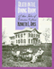
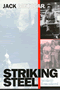

|
Dark Days in the Newsroom
McCarthyism Aimed at the Press
Alwood, Edward
Named 2008 Best Book of the Year: Adult
Non-Fiction by the Connecticut Press Club |

|
Death
in the Dining Room and Other Tales of Victorian Culture
Ames,
Kenneth L.
Henry-Russell Hitchcock Award, Victorian Society of America,
1993
Outstanding Academic Title, Choice, 1994 |

|
The
The Smoke of the Gods
A Social History of Tobacco
Burns,
Eric
A "Best of the Best from the University Presses" program selection at the 2007 ALA Annual Conference |

|
The
Spirits of America
A Social History of Alcohol
Burns,
Eric
A "Best of the Best from the University Presses" program selection at the 2004 ALA Annual Conference |

|
Conspicuous
Production
Automobiles and Elites in Detroit, 1899-1933
Davis,
Donald Finlay
Wallace K. Ferguson Prize, the Canadian Historical Association,
1989 |

|
Organizing
Asian American Labor
The Pacific Coast Canned-Salmon Industry, 1870-1942
Friday,
Chris
Outstanding Book in History Award, Association for Asian
American Studies, 1995 |

|
Arsenio Rodríguez and the Transnational Flows of Latin Popular Music
Garcia, David F.
2007 Certificate of Merit for Best Research in Recorded Folk, Ethnic, or World Music from the Association for Recorded Sound. |

|
Dilemmas
of the American Self
Hewitt,
John P.
Charles Horton Cooley Award of the Society for the Study
of Symbolic Interaction, 1990 |

|
It
Comes from the People
Community Development and Local Theology
Hinsdale,
Mary Ann, Helen M. Lewis and S. Maxine Waller
Co-winner for the Transformational Politics Book Award, American
Political Science Association, 1996 |

|
Savoring the Salt
The Legacy of Toni Cade Bambara
edited by Holmes, Linda Janet and Cheryl A. Wall
Selected as “‘The Best of the Best’ from the University Presses” Books You Should Know About” for the ALA Annual Conference, 2008 |

|
Beyond Preservation
Using Public History to Revitalize Inner Cities
Hurley, Andrew
National Council on Public History's Book Award Award, 2012 |

|
Model City Blues
Urban Space and Organized Resistance in New Haven
Jackson, Mandi Isaacs
Urban Communication Foundation Jane Jacobs Urban Communication Publication Award, 2008 |

|
Body Language
Sisters in Shape, Black Women's Fitness, and Feminist Identity Politics
Lau, Kimberly J.
Elli Köngäs-Maranda Professional Prize, American Folklore Society, 2011 |

|
Performing Asian America
Race and Ethnicity on the Contemporary Stage
Lee, Josephine
Lifetime Achievement Award from the Association of Asian American Studies Conference, 2016
|

|
The
Possessive Investment in Whiteness
How White People Profit from Identity Politics
Lipsitz,
George
Outstanding Books Award, Gustavus Myers Center for the Study
of Bigotry and Human Rights in North America, 1999 |
|
Selma's
Peacemaker
Ralph Smeltzer and Civil Rights Mediation
Longenecker,
Steve L.
Outstanding Book Award, Gustavus Myers Center for Human Rights,
1987 |

|
Desis
in the House
Indian American Youth Culture in New York City
Maira,
Sunaina Marr
Honorable Mention for the Lora Romero First Book Publication
Prize from the American Studies Association, 2003 |
|
Financialization of Daily Life
Martin, Randy
Randy Martin is the recipient of the American Sociological Association's Marxist Sociology Lifetime Achievement Award, 2015 |

|
Under New Management
Universities, Administrative Labor, and the Professional Turn
Martin, Randy
Randy Martin is the recipient of the American Sociological Association's Marxist Sociology Lifetime Achievement Award, 2015 |

|
The
New Left Revisited
edited
by McMillian, John and Paul Buhle
Outstanding Academic Title, Choice, 2003 |

|
Holy
Leisure
Recreation and Religion in God’s Square Mile
Messenger,
Troy
Winner of the the Outstanding New Book on New Jersey award
from the New Jersey Historical Alliance, 1999 |

|
Striking
Steel
Solidarity Remembered
Metzgar,
Jack
Winner of the Sidney Hillman Foundation Award, 2001 |

|
All
Talk
The Talkshow in Media Culture
Munson,
Wayne
Outstanding Academic Title, Choice, 1994 |

|
Cane
Fires
The Anti-Japanese Movement in Hawaii, 1865-1945
Okihiro,
Gary Y.
Outstanding Book in History and Social Science Award, Association
for Asian American Studies, 1992 |
|
The
Old Christian Right
The Protestant Far Right from the Depression to the Cold War
Ribuffo,
Leo
Winner of the Merle Curti Award of the Organization of American
Historians for the best book in American intellectual history,
1985 |

|
Messiahs of 1933
How American Yiddish Theatre Survived Adversity through Satire
Schechter, Joel
Outstanding Academic Title, Choice, 2008 |

|
The
World Next Door
South Asian American Literature and the Idea of America
Srikanth, Rajini
Outstanding Academic Title, Choice, 2005
Cultural Studies Book Award, Association for Asian American Studies,
2006 |

|
The Scrapbook in American Life
edited by Tucker, Susan, Katherine Ott and Patricia
P. Buckler
Winner of the Allen Noble Award for best edited book, 2006 |

|
Mickey
Mouse History and Other Essays on American Memory
Wallace,
Michael
Historic Preservation Book Prize, The Center for Historic
Preservation at Mary Washington College, 1997 |

|
To
Save China, To Save Ourselves
The Chinese Hand Laundry Alliance of New York
Yu,
Renqiu
Outstanding Book in History Award, Association for Asian
American Studies, 1993
Outstanding Academic Title, Choice, 1994 |